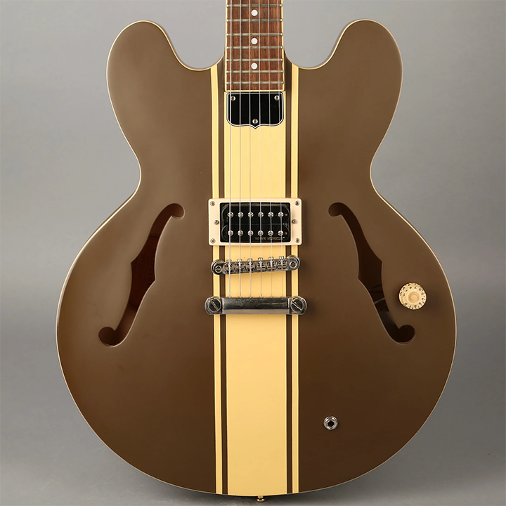
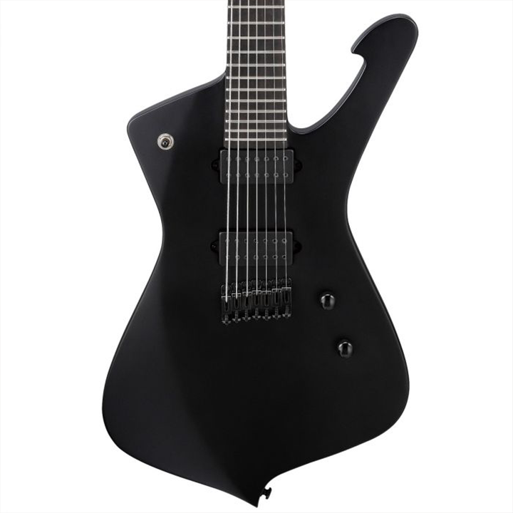

Whaddup! This is a practice website I created to practice HTML and CSS.
On this main page, I'll list my top five guitars
- 1. Gibson Les Paul
This is my dream guitar that I hope to buy when I get a full time coding job! - 2. Fender Telecaster
I've always enjoyed the design and sound of the telecaster. If I was ever made of money, I would definitely buy a Telecaster alongside a Les Paul \m/ - 3. Epiphone ES-333

Any blink-182 fan will immediately recgonize this guitar and understand why it's on my list. A custom guitar made by Tom Delonge, I just love the design and the sound it gave for blink's self titled album. - 4. Ibanez Iceman

Another guilty pleasure guitar from my childhood. I grew up with System of a Down, and was obsessed with the Iceman because of their guitarist Daron Malakian who used it. Always thought it was a really cool, unique guitar. It also has a beefy sound for that alternative metal we love! - 5. Martin Acoustic Guitars
Couldn't only have electric guitars up here! Martin guitars are the ephinany of quality and design. Taking a tour of their workshop is an amazing experience. I hope someday to be able to afford one to iclude in my arsenal.